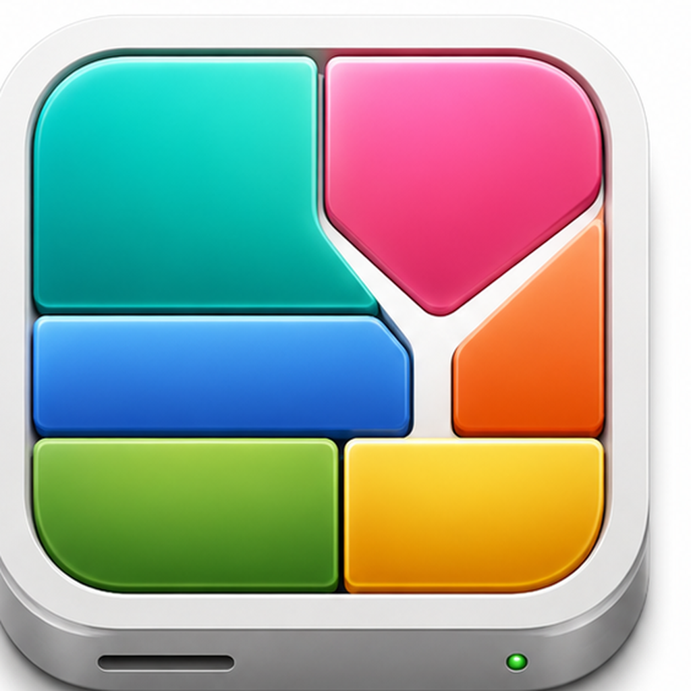
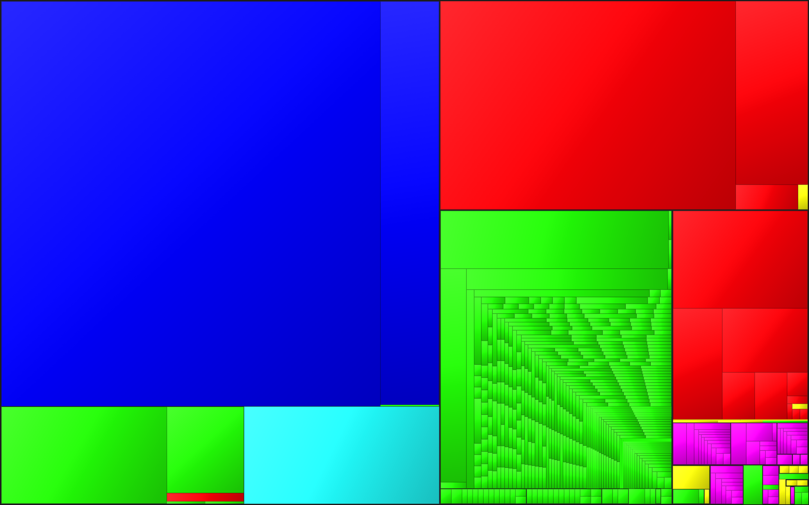

A modern disk usage analyzer for macOS — Apple Silicon native, treemap visualization, multi-window.
Download for macOS▾
Every file shown as a colored cell sized by how much disk it takes. Color-by-kind (images, code, video, …) so big offenders pop out instantly.
Colors ported verbatim from Disk Inventory X's source and assigned by size rank — the dominant kind is always blue, the runner-up red. Feels like home.
NSOutlineView with sortable columns syncs with the treemap. Inspector panel shows physical & logical sizes, kind, modified date, and one-click Reveal / Open / Quick Look / Trash.
Each scan opens in its own restorable window. ⌘N starts a new scan; the empty landing window stays clean.
Tap any kind in the bottom bar to dim everything else in the treemap to 18% — instantly see where your images / videos / archives live.
Cushion shading and per-depth contrast adapt automatically. Reduce Transparency / Reduce Motion respected.
Runs entirely on-device. No telemetry, no crash reports, no network.
xattr -dr com.apple.quarantine /Applications/DiskInventoryY.app. Notarized signed builds are coming.
DiskInventoryY is a from-scratch Swift/SwiftUI rewrite of Disk Inventory X by Tjark Derlien — the beloved macOS disk-usage utility originally released in 2003 (source on GitLab). The treemap color palette is ported verbatim from DIX's FileTypeColors.m, and the squarified layout follows the algorithm popularized by KDirStat (Stefan Hundhammer), described in Bruls / Huijsen / van Wijk's 2000 paper. Cushion shading follows van Wijk & van de Wetering's 1999 INFOVIS paper.
git clone https://github.com/agriev/diskinventoryy.git
cd diskinventoryy
brew install xcodegen # one-time
xcodegen generate
open DiskInventoryY.xcodeprojNo third-party dependencies. Tests run with ⌘U.